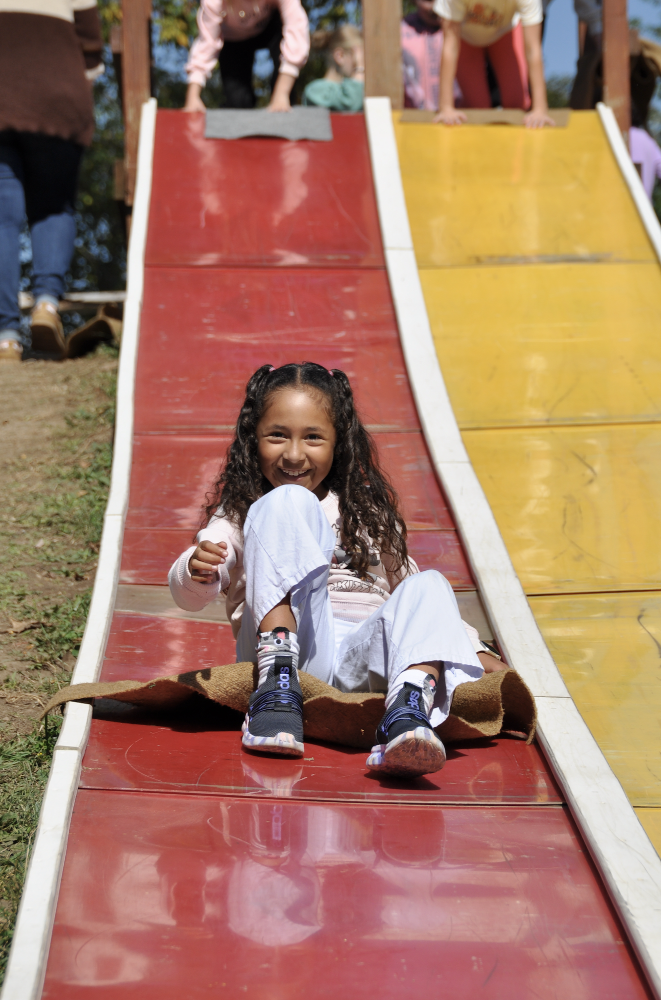

About Rainy
Rainy is a curious and imaginative 8-year-old who loves learning through stories, art, and hands-on experiences. She enjoys exploring new ideas and asking thoughtful questions about the world around her.
Reading & Curiosity
Reading is one of Rainy’s favorite things because every book feels like a new adventure. She especially loves the Diary of a Wimpy Kid series and enjoys how the author tells funny, relatable stories that make her laugh. She finds the characters entertaining and loves the humor throughout the books.
Rainy is also drawn to spooky and horror stories. She enjoys mysterious plots, surprising twists, and stories that feel a little scary but exciting at the same time. Her curiosity makes her want to understand how stories are written and how authors create suspense and imagination on every page.
Art & Creativity
Rainy also enjoys art because it lets her express her imagination. She likes drawing, coloring, and creating little projects that tell a story. Art is one of the ways she shows her personality—bright, playful, and thoughtful.
